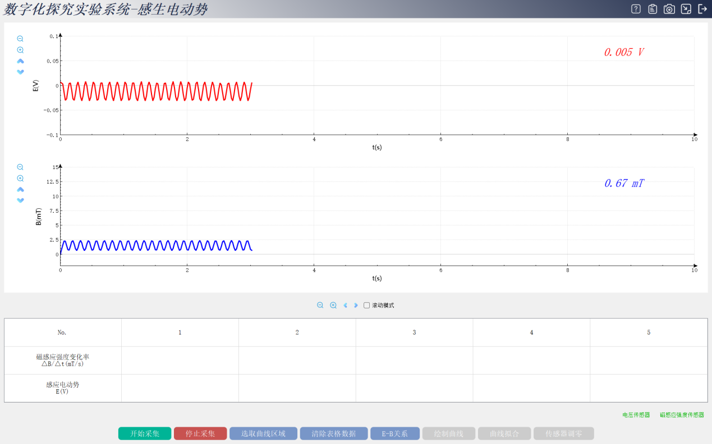
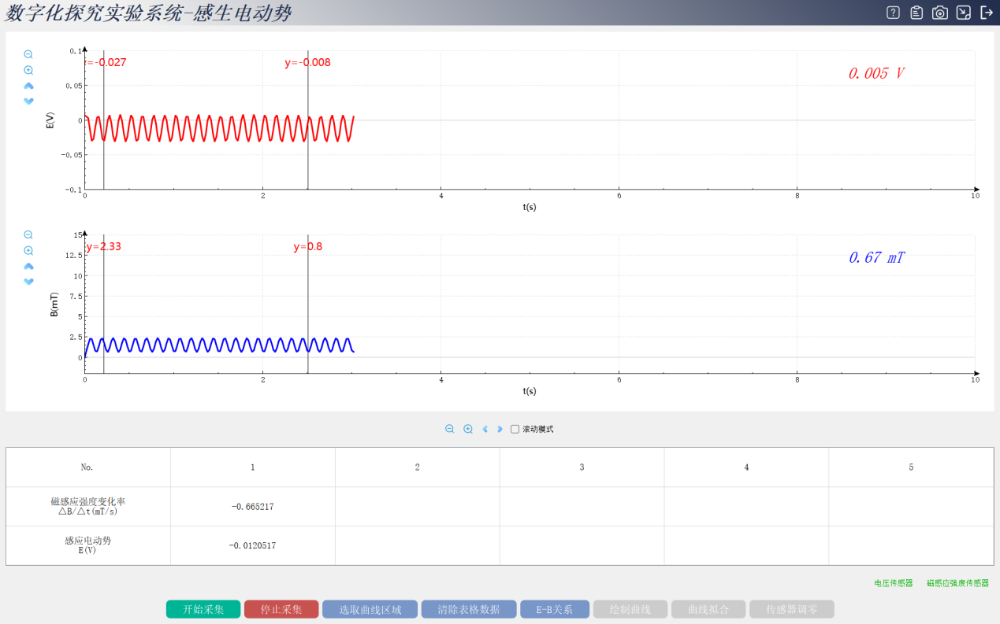
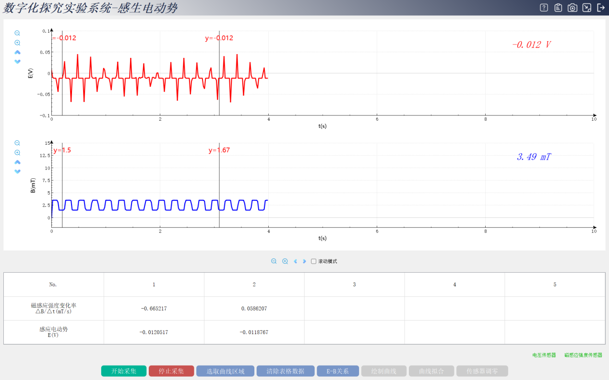
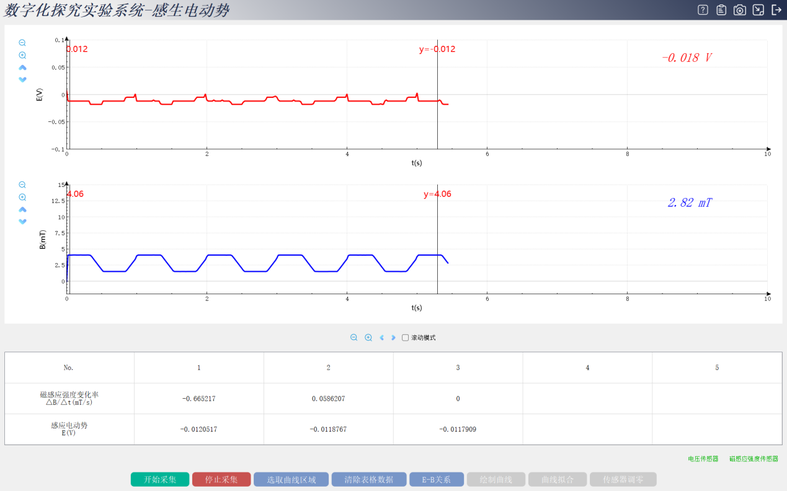
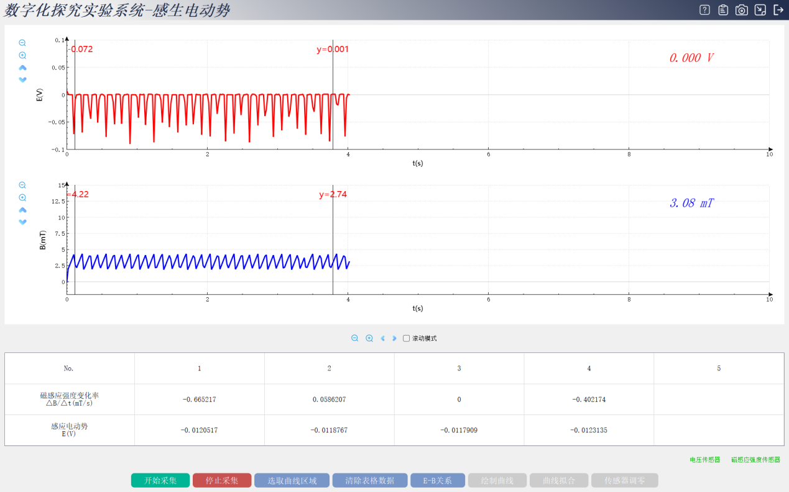
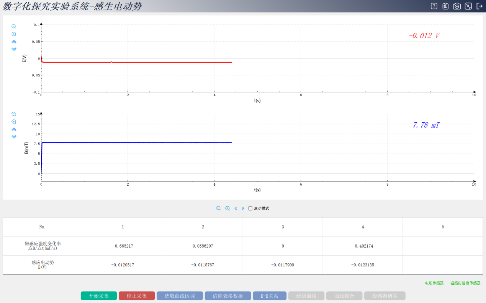
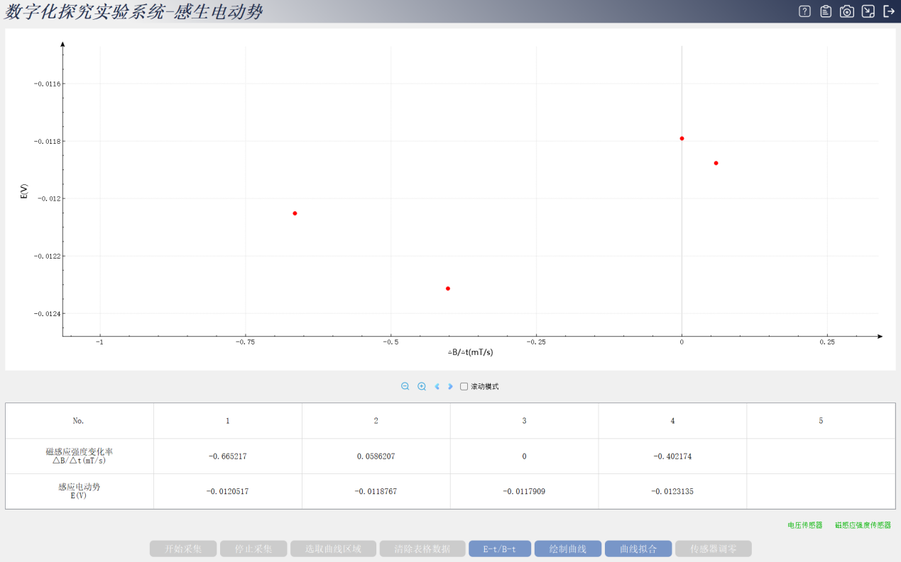
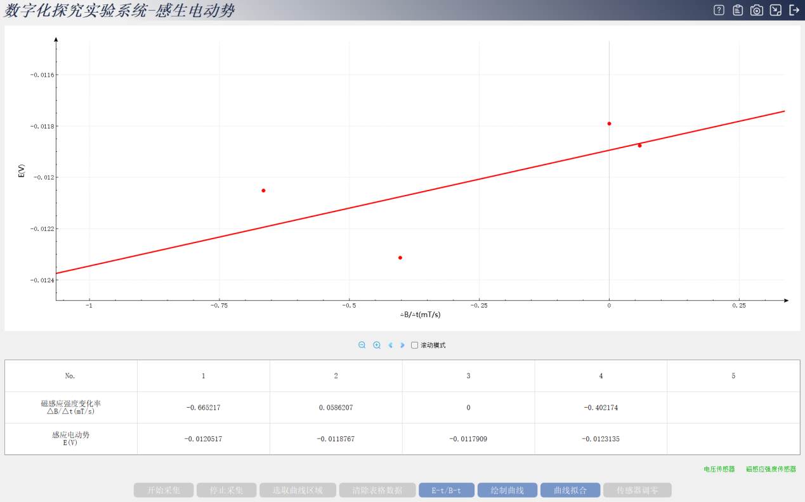
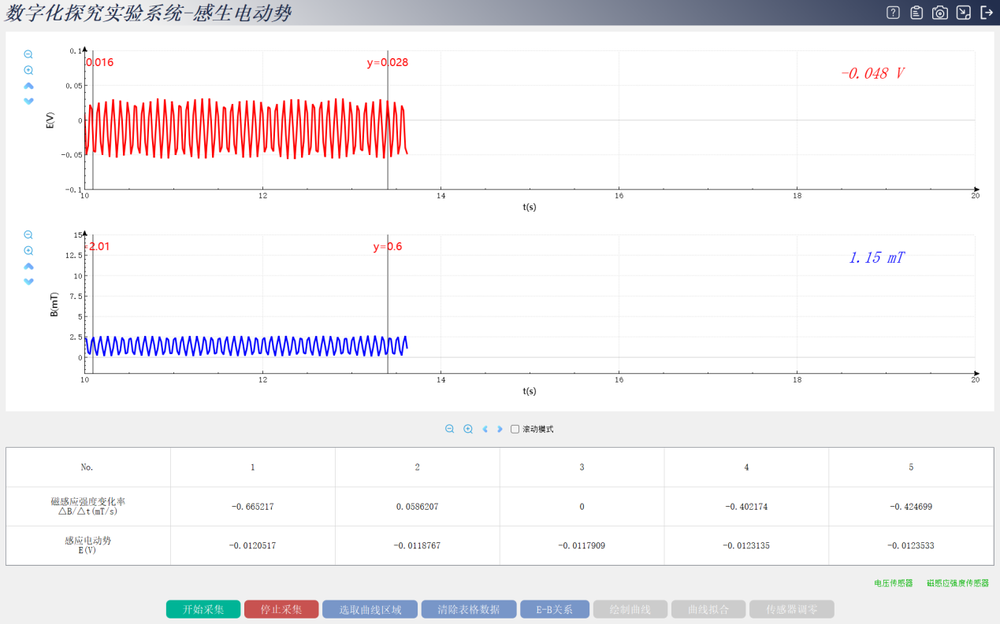

实验四十四 感生电动势与磁通量的变化率关系（装置图）
【实验目的】
探究感生电动势与磁通量的变化率关系。
【实验原理】
应磁通量变化产生感应电动势的现象。感生电动势的计算公式：E=nΔΦ/Δt，其中E是感生电动势，n是线圈匝数，ΔΦ是磁通量的变化量，Δt是磁通量变化所用的时间。磁通量的计算公式：Φ=B·S，其中Φ是磁通量，B是磁感应强度，S是通过磁场的面积
【实验器材】
数据采集器、磁感应强度传感器、智能电源、法拉第感生实验器、计算机等。
【实验操作步骤】
打开思维特数字化探究实验系统感应电动势系统 进入实验界面会在右下角显示连接对应的传感器。
【数据采集】
第一步 点击开始采集软件自动采集电压和磁感应强度波形

第二步数据采集完成点击停止采集 选取曲线区域得到相应的数据

调节智能电源的波形重复以上步骤得到不一样的波形方波：

梯形波：

锯齿波：

直流波：

点击E-B的关系绘制曲线

再次点击曲线拟合：

第三步 调节智能电源斜率拨片改变上升沿斜率 重复上述步骤 采集多组实验数据

即完成数据的采集
【数据分析】
我们观察实验界面中的直线拟合线可以看出磁通量变化率与感应电动势的拟合线是一条斜率为正且通过原点的直线。注意如果实验完成后需重复实验可以点击实验界面底部的清除表格数据按钮清除所有数据重新开始实验。
【实验结论】
1.通过分析实验结果我们得出以下实验结论。
2.在闭合电路中，感应电动势的大小跟穿过这一电路的磁通量的变化率成正比。
【实验注意事项】
之前我们使用了数字化实验器材来探究法拉第磁感应定律在操作过程中有哪些注意事项呢我们一起来回顾一下。
1.实验前，需对电压传感器进行校准。
2.本实验选区是产生误差的主要原因，因此选区时选择区域要准确。
3.本次实验过程到此结束。
【思考与讨论】
用导线来做切割磁感线运动，如何完成实验呢？